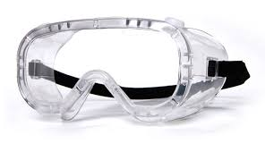
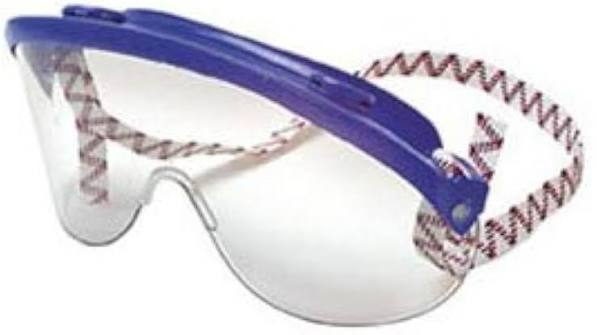

Grade Map
Your grade, your map 🗺
Click a slice of the pie to jump to everything about that part of your grade. The center takes you to the grade overview and the math behind it.
The big red slice is the message: completing Objectives is 60% of your grade, and the retake system means every one of them stays winnable all semester.
How This Course Works
A mastery course, in one paragraph
The semester is organized into ten Objectives — ten packets of chemistry skills you complete one at a time. Each Objective is completed by passing its Skill Check (a short, handwritten test). Your grade is built from those ten packets (60%), lab (20%), the ACS national final (15%), and the semester investigation (5%). Retakes are unlimited. No single bad day defines your grade.
There is also a running mystery. You'll be sorted into houses in week 3, and the chemistry you learn is the chemistry you'll need to solve it. Come Thursdays — that's all we'll say here.
Your week, step by step
- Monday — Reading Check due 11:59 PM in weeks that start a new objective. Do the reading first; the check is quick if you did.
- Tuesday — Practice Quiz due 11:59 PM in Skill Check weeks. Practice each skill until you get two in a row; upload your completion page.
- Wednesday — Problem Set due 11:59 PM in Skill Check weeks. Ten handwritten problems on the exact Skill Check template.
- Thursday — flex block, 8:00 AM. Skill Checks, spirals, retakes, review — the week's payoff. Batch closes to save in your phone: Oct 9 · Nov 13 · Dec 4.
Your Week, Every Week
Four deadlines, same rhythm, all semester
- Reading check — due Monday 11:59 PM before each week of lectures on a new objective. Short, auto-graded, in Canvas.
- Practice quiz — due Tuesday 11:59 PM of Skill Check week. Online mastery quiz: practice each skill until you answer two in a row correctly; upload your completion page.
- Problem set — due Wednesday 11:59 PM of Skill Check week. Ten handwritten problems on the exact Skill Check template. Worked solutions publish the Sunday before each Skill Check — check your work as you go.
- Skill Check — Thursday, in the flex block. The measurement that counts.
Early release: every packet publishes about two weeks before its unit begins. For compressed units, that head start isn't a bonus — it's the plan.
Run the loop — and use the tracker
- Do the reading before Tuesday — lecture builds on it, and readers retake less.
- Treat Wednesday's problem set as your dress rehearsal: submit, unlock the solutions, and check your work that night. Walk into Thursday knowing where you stand.
- Heavy week coming in any class? Start the next packet early — it's already published.
- Stuck? Run the "I'm Stuck" protocol (below) and bring me a specific question.
The "I'm Stuck" Protocol — turn confusion into passed Skill Checks
- Locate the relevant section — find where this topic is covered in the reading or your notes.
- Define key terms — write out definitions for anything in the problem you're unsure about.
- Identify your sticking point — the setup? the math? the concept?
- Attempt a partial solution — show whatever you can do.
- Write a specific question — not "I don't get it" but "I don't understand how to convert grams to moles here because…" Then bring it to office hours and we'll get you unstuck fast.
Reading Check
In Canvas, before Tuesday's lecture.
Practice Quiz
Two-in-a-row mastery; upload completion page. (*Skill Check weeks.)
Problem Set
Ten problems, exact template; solutions unlock on submit.
Skill Check
The measurement that counts.
Tap cards as you finish — saves on this device, resets each Monday.
Skill Checks & Retakes
Scoring & the rules
- Handwritten problems worth 5 points each: 2 for setup, 2 for execution, 1 for the clearly boxed answer.
- Pass = both: total score at least 80%, and at least 4 of 5 on each problem marked ★ must-test (labeled on the test).
- Passing is binary — no partial packet credit, no rounding; every point total is built so 80% lands on a whole number.
- Each Skill Check carries one or two short review questions from earlier objectives — they keep old skills warm and are never counted against your 80%.
- Third gate: you must attempt every one of the ten Skill Checks at least once to pass the course — regardless of score.
- Retakes: unlimited, new numbers, same structure and bar. Remediation must be completed before any retake unlocks.
- Batched closes: SC 1–4 → Fri Oct 9 · SC 5–7 → Fri Nov 13 · SC 8–10 → Fri Dec 4 (last retake day of the term).
Before, during, after
- Before: run the weekly rhythm — the problem set is a dress rehearsal on the exact template you'll see Thursday.
- During: show your setup on every problem and box every answer — most of the points live in setup and execution. Write what you know even when you can't finish.
- After a pass: packet complete — start the next one. After a miss: your remediation targets exactly the skills you missed, never the whole packet. Do it, then retake the week you're ready.
- Attempting costs one Thursday; skipping one costs the course. There is no strategic reason to be absent on a Skill Check day.
- A Skill Check that didn't go your way is an obstacle, not a verdict — but don't sit on it; the batch close dates don't move.
| Skill Check | Objective | Date (Thursday flex block) |
|---|---|---|
| 1 | Foundations: Matter, Measurement & Atoms | Aug 27 |
| 2 | Classification, Compounds & Nomenclature | Sep 3 |
| 3 | Mole & Composition | Sep 10 |
| 4 | Reactions, Aqueous Chemistry & Stoichiometry | Sep 24 |
| 5 | Thermochemistry | Oct 8 |
| 6 | Gases & Kinetic Molecular Theory | Oct 15 |
| 7 | Atomic Structure & Periodicity | Oct 29 |
| 8 | Bonding I: Lewis, VSEPR, Valence Bond | Nov 12 |
| 9 | Bonding II → Materials | Nov 19 |
| 10 | Cumulative capstone — can raise earlier scores | TUESDAY Nov 24 |
Where retakes happen — three options
Your Grade
Components & gates
- 10 Objective packets — 60% (6% each). Each is Complete or Incomplete: pass the Skill Check, complete the packet. 79% and 0% earn the same packet credit until you retake and pass.
- Lab — 20%. Its own track: floor of 10 completed experiments plus the lab practical.
- ACS Final — 15%. Standardized national exam, finals week. You must sit it to pass the course.
- Investigation — 5%. Spirals, verdict ballots, and the weekly tip line — all completed/incomplete, in person.
- Three gates (independent of percentage): pass the lab section · sit the ACS Final · attempt every Skill Check at least once.
- Letter grades: cutoffs pending ratification — will be posted before the semester begins
The strategy is persistence
- Each packet ≈ half a letter grade: all 10 keeps every grade on the table; 8 of 10 lands near 88; 6 of 10 near 76. Complete every packet — the retake system means persistence gets you there.
- Keep the investigation 5% — it's completion credit. Show up Thursdays and do the thing.
- Protect your lab count (see Lab, below).
- Use November 24 as your safety net — prepare for it like it matters, because it does.
- Any week you're unsure where you stand, bring your gradebook to office hours — five minutes of arithmetic beats a semester of guessing. Do it before October 9.
Laboratory
The rules & safety
- Eleven experiments + the department lab practical = 12 hands-on events, Tuesdays 9:30, NS 337.
- Floor to pass the lab section: 10 completed experiments. More than 3 unexcused misses puts the floor out of reach.
- Lab practical: Tuesday, November 17 — required to pass the course. Only makeup: December 1.
- Safety is non-negotiable:
goggles📷

, knee-length white lab coat📷 , closed shoes (no crocs or slides), hair tied back. Improperly dressed = you cannot do the experiment. Week 1 is required safety training.
→ Full gear list, prices & where to buy: Required Materials - Miss the day's safety briefing and you sit out that experiment — this is a safety rule, not a punishment.
Protect your standing
- Show up Tuesdays by 9:30 — the briefing opens the block.
- Keep your goggles and coat in your bag or car — never be the person sent home for shoes.
- Going to miss? Tell me within 24 hours — before is better than after.
- Count your misses. At 3, the December 1 makeup is mandatory for you — and it recovers exactly one experiment. It's a safety net, not a strategy.
- On Skill Check Thursdays, finish lab calculations at home — that's expected, not late.
Full lab schedule (Tuesdays, NS 337)
| Wk | Date | Lab |
|---|---|---|
| 1 | Aug 11 | Safety training (required) |
| 2 | Aug 18 | 0a — Laboratory Techniques |
| 3 | Aug 25 | 1a — Introduction to Measurements |
| 4 | Sep 1 | 3a — Determination of a Chemical Formula |
| 5 | Sep 8 | 2a — Qualitative Observations (Copper Cycle) |
| 6 | Sep 15 | 5b — Densities of NaCl Solutions |
| 7 | Sep 22 | Flex / catch-up (no new lab) |
| 8 | Sep 29 | 5f — Percent Acetic Acid in Vinegar |
| 9 | Oct 6 | 7b — Calorimetry & Hess's Law |
| 10 | Oct 13 | 6a — Molar Mass of a Volatile Liquid |
| 11 | Oct 20 | 5l — Citric Acid in Soda |
| 12 | Oct 27 | 5i — Redox Titration (KMnO₄) |
| 13 | Nov 3 | 14b — Ice Cream 🍦 |
| 14 | Nov 10 | Practical review lab |
| 15 | Nov 17 | LAB PRACTICAL (department written) |
| 16 | Nov 24 | No lab — Skill Check 10 morning |
| 17 | Dec 1 | Makeup / open lab (mandatory at 3 misses; last practical makeup) |
| 18 | — | Finals week — no lab |
Time & Attendance
What this course asks of you
- This is a 5-unit course verify units at posting — plan for a real weekly commitment.
- Scheduled time (~8.5 hrs/week): lecture Tue/Thu 8:00–9:15 + lab/flex Tue/Thu 9:30–12:20. Tuesday = lecture + experiment; Thursday = lecture + flex block (Skill Checks, investigation, retakes).
- Outside time (~10–12 hrs/week): reading + reading check, practice quiz, problem set, retake prep, lab calculations.
- There is no attendance grade — and nothing replaces being here: Thursdays hold the Skill Checks (attempting each is required to pass) and lab is hands-on by nature.
Make the hours real
- Block Tue/Thu 8:00–12:20 as unmovable — treat it like a job shift.
- Put the Monday/Tuesday/Wednesday deadlines on repeat in your phone — the rhythm never changes.
- Working a job? Use early packet release to shift coursework into your light days — the packets are always published two weeks ahead.
- If life happens — illness, work, family, transportation — reach out early. Small problems stay small when I hear about them in week 3, not week 13.
Class Norms — Shared Agreements
We build this class together. These agreements keep it a place where everyone can learn, ask questions, and grow as a scientist.
- Be kind and respectful. Chemistry is hard enough without fearing judgment from classmates. Be someone others can turn to.
- Embrace different perspectives. Different backgrounds and ways of thinking are a strength. Misunderstandings become learning, not division.
- Own your mistakes. A missed cleanup, a Skill Check that didn't go your way — own it, learn, move forward. That's what the retake system is for.
- Protect academic integrity. Don't share, post, or redistribute course materials — Skill Checks, labs, answer keys, mystery materials.
- Minimize distractions. Arrive on time (near the door if you must leave early), phones silenced and stored unless you have a DSPS accommodation, laptops for class work only.
- Work together generously: share the work fairly, listen before responding, pull quieter voices in, disagree with ideas rather than people.
- Helping a classmate understand deepens your own learning — that's not cheating, that's science. Copying answers is the thing that isn't.
- Come with your questions written down — attempting problems and showing your thinking beats silent perfection.
- If something feels wrong — excluded, disrespected, unable to participate — talk to me privately and we fix it together. Everyone belongs here, and I take that seriously.
Required Materials
What's required (mostly free)
- Textbook — FREE: OpenStax Chemistry 2e, online. Every reading guide section has a QR code straight to the assigned pages.
- Lab manual — FREE, provided. Lab notebook provided too.
- Safety gear: approved
splash goggles📷
(Uvex or Visorgog📷

, ~$25–40) · knee-length white lab coat📷 (~$30–45) · closed shoes · hair tie. FCC bookstore carries all of it. - Calculator: any non-graphing scientific — TI-36XPro or TI-34 MultiView (~$26) recommended.
- Scantron (#95677) for the ACS Final only — Skill Checks never use them.
Get ready before week 2
- Buy goggles, coat, and calculator in week 1 — experiments start Aug 18, and safety gear is required at the door.
- Get used to your own calculator early — different models behave differently, and Skill Check day is the wrong time to discover that. I'm happy to teach you yours.
- Buy your scantron early and keep it in a sheet protector — torn scantrons jam the grading machine.
- Cost a barrier? Talk to me or Financial Aid. We will figure it out — the bookstore price of a lab coat will never be the obstacle that stops someone in chemistry.
Course Calendar
Lecture Tue/Thu 8:00–9:15 · Lab/Flex Tue/Thu 9:30–12:20 · New Science 337. Reading checks due Mondays 11:59 PM; practice quiz Tuesday and problem set Wednesday of each Skill Check week.
| Wk | Dates | Objective(s) | Tuesday Lab | Thursday | Deadlines & notes |
|---|---|---|---|---|---|
| 1 | Aug 11–13 | Objective 1 | Safety training | Investigation: the hook | Reading Check 1 due Wed (wk-1 exception) |
| 2 | Aug 18–20 | Objective 1 wraps | 0a Lab Techniques | Obj 1 practice/review | |
| 3 | Aug 25–27 | Objective 2 | 1a Measurements | SKILL CHECK 1 + house sorting | Double reading check Mon Aug 24 |
| 4 | Sep 1–3 | Objective 3 | 3a Chemical Formula | SKILL CHECK 2 | Doubles Mon Aug 31 · last add day Aug 30 |
| 5 | Sep 8–10 | Objective 4 | 2a Copper Cycle | SKILL CHECK 3 | Doubles Mon Sep 7 (Labor Day — online) |
| 6 | Sep 15–17 | Objective 4 wraps | 5b NaCl Densities | Spiral 1 | Tue: ungraded mid-unit checkpoint |
| 7 | Sep 22–24 | Objective 5 | Flex / catch-up | SKILL CHECK 4 | |
| 8 | Sep 29–Oct 1 | Obj 5 wraps · Obj 6 starts | 5f Vinegar | — | Doubles Mon Sep 28 |
| 9 | Oct 6–8 | Obj 6 wraps · Obj 7 starts | 7b Calorimetry & Hess | SKILL CHECK 5 + Spiral 2 | Fri Oct 9: SC 1–4 close · W-deadline |
| 10 | Oct 13–15 | Objective 7 | 6a Volatile Liquid | SKILL CHECK 6 | |
| 11 | Oct 20–22 | Obj 7 wraps · Obj 8 starts | 5l Citric Acid | — | Doubles Mon Oct 19 |
| 12 | Oct 27–29 | Objective 8 | 5i Redox Titration | SKILL CHECK 7 + Spiral 3 | Skill Check 10 blueprint publishes |
| 13 | Nov 3–5 | Obj 8 wraps · Obj 9 starts | 14b Ice Cream | Spiral 4 | |
| 14 | Nov 10–12 | Objective 9 | Practical review lab | SKILL CHECK 8 + Spiral 5 | SC10 review releases ~Nov 10 · Obj 8 problem set due online Wed (Veterans Day) · Fri Nov 13: SC 5–7 close |
| 15 | Nov 17–19 | Objective 9 wraps Tue | LAB PRACTICAL | AM review → SKILL CHECK 9 | A tough week by design — plan for it |
| 16 | Nov 24 | Objective 10 | No lab — warm-up 8:00 | 🚫 Thanksgiving | SKILL CHECK 10 Tue in flex block · nothing else due this week |
| 17 | Dec 1–3 | Review | Makeup / open lab | ACS review (Dr. Dan) + Championship | Fri Dec 4: SC 8–10 close — last retake day |
| 18 | Dec 8 | Finals | — | — | ACS FINAL Tue Dec 8, 8:00–9:50 AM |
Lab Practical & ACS Final
Two required components
- Lab Practical — Tuesday, Nov 17, regular lab block. Department-written, hands-on. Required to pass the course. Only makeup: Dec 1 — no alternate time exists after that.
- ACS Final — Tuesday, Dec 8, 8:00–9:50 AM, NS 337 (per the FCC finals schedule). A standardized national exam. You must sit it to pass the course.
- Missing either one means not passing the course, with two exceptions: advance arrangements (contact me as early as possible — a reschedule is not guaranteed) and extenuating circumstances (serious, verifiable, unforeseeable — may qualify for an Incomplete under FCC policy if you hold a passing grade at the time).
December takes care of itself
- The spirals you do all semester are your spaced ACS review — take them seriously and you're never cramming.
- Use the Nov 10 practical review lab — it exists precisely so Nov 17 isn't a surprise.
- Come to the Dec 3 comprehensive review (Dr. Dan, live) and bring your two weakest objectives as questions.
- Exam day: calculator (non-graphing) + scantron + arrive by 8:00.
- Know a conflict is coming? Tell me the day you learn about it — early notice is what makes arrangements possible.
The Investigation (5%)
Something happened before the semester began. Week 3, you'll be sorted into houses, and from then on the Thursday flex block carries a running investigation: spiral investigations (handwritten chemistry from earlier objectives — deliberate spaced practice), verdict ballots (your evidence-backed vote with a confidence percentage), and the weekly tip line. All completed/incomplete, all in person. The championship and induction land Thursday, December 3 — which is also the ACS review.
- Show up Thursdays — ballots and the tip line close with each session and can't be done remotely.
- Treat spirals as free retake insurance: they keep old skills alive, and old skills are what Skill Check review questions and the Nov 24 capstone draw from.
- Back your verdicts with evidence — "how certain are you, Investigator?" is a chemistry question.
We've Got You — Campus Support
College is more than chemistry. These are free, real, and used by your classmates every semester. Using them is a sign of strength, not struggle.
🍎 RAM Pantry
Free food assistance for enrolled students. No stigma, no hoops.
🧠 Psychological Services
Free, confidential counseling on campus. In crisis? Call or text 988, any time.
🩺 Health Services
On-campus medical care for enrolled students.
♿ DSP&S
Accommodations for disability-related needs. Building A · (559) 442-8237.
📚 Tutoring + GRASP
Free tutoring: Tutorial Center, PASS, Writing & Reading Center, and chemistry-specific GRASP sessions. I'm at the Grasp office Fridays 8–11.
🧭 Counseling
Stay in touch with your counselor at the start, middle, and end of semester.
💵 Financial Aid
Tuition, books, supplies, transportation — aid covers more than you think.
🤝 Special Programs
EOPS, CARE, Dream Center, Puente, RAIN, Rising Scholars, Umoja, USEAA, NextUp, Veterans Resource Center — communities built for you.
📋 Admissions & Records
Registration, transcripts, petitions, enrollment verification, graduation.
📖 Library
Online resources, technology loans, reserved textbooks, and awesome librarians.
💼 Career & Employment
Career resources for current students and alumni.
💬 Me — Prof. Gilley
Canvas Inbox (<24 hr Mon–Fri) · email (24–48 hr) · NS310 M/W 1:00–1:50 · Grasp Fri 8–11. You never need a reason to come by.
How to reach me — and what to expect
| Channel | Best for | Response time |
|---|---|---|
| Canvas Inbox | Quick questions, assignment clarifications | Within 24 hours (Mon–Fri) |
| Email — rob.gilley@fresnocitycollege.edu | Longer questions, documentation, emergencies | 24–48 hours (Mon–Fri) |
| Office hours — NS310 M/W 1:00–1:50 · Grasp Fri 8–11 | Working problems, retakes, grade questions, checking in | Immediate |
Weekends: I don't monitor email or Canvas — Friday-evening messages get answered Monday. Your move: check Canvas and student email daily; when you write, include the assignment name, the problem number, and what you've tried — specific questions get fast, useful answers.
Policies
Late work — how each window works
Most of this course has no "late" — it has the test-out waiver and the close dates. Reading checks / practice quiz / problem set: hit the Monday–Wednesday deadlines; the rhythm is the point. Skipped something? Pass Thursday's Skill Check and it's forgiven; miss the Skill Check and the skipped work joins your retake requirements. Skill Checks: attempt Thursday no matter what; retake any week you're ready — batch closes are hard: Oct 9 · Nov 13 · Dec 4. Lab calculations: per lab instructions; on Skill Check Thursdays, finish at home. Investigation: in person Thursdays; ballots close with each session. The absolute end of the line: no work of any kind is accepted after Friday, December 4 — the Friday before finals week.
Extra credit
There is no extra credit. The retake system is the second chance — it's bigger than any extra credit could be.
Missed Lab Practical or Final Exam (full policy)
The lab practical and the final exam are required course components; missing either one means not passing the course, with two exceptions.
Advance arrangements. A student who knows in advance that they cannot attend the scheduled lab practical or final exam must contact me as early as possible to arrange an alternate time. A reschedule is not guaranteed and depends on the times available. No alternate lab practical time exists after December 1.
Extenuating circumstances. A student who misses the lab practical or final exam for a serious, verifiable, and unforeseeable reason may be assigned an Incomplete ("I") grade under Fresno City College policy, provided the student holds a passing grade in the course at that time. I will file a Report of Incomplete Grade specifying exactly what must be completed, the deadline, and the grade that will be assigned if the work is not completed. Coursework must be completed no later than the deadline on that report, and in no case later than the end of the following semester.
Academic dishonesty (Fresno City College policy)
Students at Fresno City College are entitled to the best education that the college can make available to them, and they, their instructors, and their fellow students share the responsibility to ensure that this education is honestly attained. Because cheating, plagiarism, and collusion in dishonest activities erode the integrity of the college, each student is expected to exert an entirely honest effort in all academic endeavors. Academic dishonesty in any form is a very serious offense and will incur serious consequences.
Cheating is the act or attempted act of taking an examination or performing an assigned, evaluated task in a fraudulent or deceptive manner, such as having improper access to answers, in an attempt to gain an unearned academic advantage. Cheating may include, but is not limited to, copying from another's work, supplying one's work to another, giving or receiving copies of examinations without an instructor's permission, using or displaying notes or devices inappropriate to the conditions of the examination, allowing someone other than the officially enrolled student to represent the student, or failing to disclose research results completely.
Plagiarism is a specific form of cheating and is the use of another's words or ideas without identifying them as such or giving credit to the source. Plagiarism may include, but is not limited to, failing to provide complete citations and references for all work that draws on the ideas, words, or work of others, failing to identify the contributors to work done in collaboration, submitting duplicate work to be evaluated in different courses without the knowledge and consent of the instructors involved, or encouraging, permitting, or assisting another to do any act that could subject him or her to discipline. Incidents of cheating and plagiarism may result in a variety of sanctions and penalties that may range from a failing grade on the particular examination, paper, project, or assignment in question to a failing grade in the course, at the discretion of the instructor and depending on the severity and frequency of the incidents.
Accommodations for students with disabilities (DSP&S)
I aim to create an inclusive learning environment and respect the need for accommodations. To access tools and/or services for disability-related needs, you must be registered with the DSP&S (Disabled Students Programs and Services) office on campus — Building A, (559) 442-8237. If you are already registered, your counselor will provide me with your Faculty Notification Letter.
If your accommodation includes taking tests in the DSP&S office, make an appointment at least 3 business days before the assessment and let me know. Skill Checks and problem sets are completed by hand because handwritten, work-weighted problem solving is what this course certifies — you practice in the same mode you're tested in. If you have a documented accommodation, an equivalent alternative is always available; talk to me or DSPS.
Course description, objectives & learning outcomes
This section auto-populates from the CHEM 1A Course Outline of Record in Simple Syllabus — verify at posting.